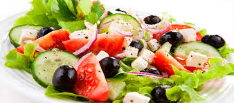

Greek Salad

Description
Salads are a quick and easy way to get in those healthy veggies. Top it off with
chicken or protein of your choice for a well-balanced meal.
Ingredients
- Tomatoes
- Cucumber
- Red onion
- Olives
- Lettuce (optional)
- Feta Cheese
- Greek Dressing
Steps
- Wash and prepare the vegetables. Cut cucumbers into cubes, thinly slice onion, chop your lettuce, slice the tomatoes
- Mix all the prepped veggies in a large bowl
- Add dressing
- Top with crumbled feta cheese
Back to main